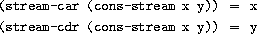
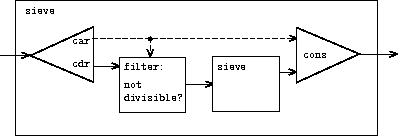
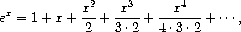
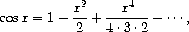
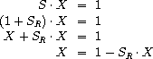
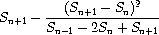
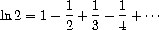
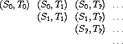
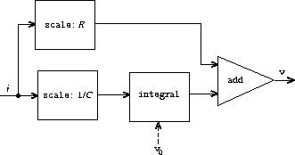
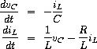

3.5 Streams
We've gained a good understanding of assignment as a tool in modeling, as well as an appreciation of the complex problems that assignment raises. It is time to ask whether we could have gone about things in a different way, so as to avoid some of these problems. In this section, we explore an alternative approach to modeling state, based on data structures called streams. As we shall see, streams can mitigate some of the complexity of modeling state.
Let's step back and review where this complexity comes from. In an attempt to model real-world phenomena, we made some apparently reasonable decisions: We modeled real-world objects with local state by computational objects with local variables. We identified time variation in the real world with time variation in the computer. We implemented the time variation of the states of the model objects in the computer with assignments to the local variables of the model objects.
Is there another approach? Can we avoid identifying time in the computer with time in the modeled world? Must we make the model change with time in order to model phenomena in a changing world? Think about the issue in terms of mathematical functions. We can describe the time-varying behavior of a quantity x as a function of time x(t). If we concentrate on x instant by instant, we think of it as a changing quantity. Yet if we concentrate on the entire time history of values, we do not emphasize change -- the function itself does not change.^[52]{.small}^
If time is measured in discrete steps, then we can model a time function as a (possibly infinite) sequence. In this section, we will see how to model change in terms of sequences that represent the time histories of of the systems being modeled. To accomplish this, we introduce new data structures called streams. From an abstract point of view, a stream is simply a sequence. However, we will find that the straightforward implementation of streams as lists (as in section 2.2.1) doesn't fully reveal the power of stream processing. As an alternative, we introduce the technique of delayed evaluation, which enables us to represent very large (even infinite) sequences as streams.
Stream processing lets us model systems that have state without ever using assignment or mutable data. This has important implications, both theoretical and practical, because we can build models that avoid the drawbacks inherent in introducing assignment. On the other hand, the stream framework raises difficulties of its own, and the question of which modeling technique leads to more modular and more easily maintained systems remains open.
[3.5.1
Streams Are Delayed Lists](book-Z-H-4.html#%toc%_sec_3.5.1)
As we saw in
section
2.2.3, sequences can serve as
standard interfaces for combining program modules. We formulated
powerful abstractions for manipulating sequences, such as map,
filter, and accumulate, that capture a wide variety of operations in
a manner that is both succinct and elegant.
Unfortunately, if we represent sequences as lists, this elegance is bought at the price of severe inefficiency with respect to both the time and space required by our computations. When we represent manipulations on sequences as transformations of lists, our programs must construct and copy data structures (which may be huge) at every step of a process.
To see why this is true, let us compare two programs for computing the sum of all the prime numbers in an interval. The first program is written in standard iterative style:^[53]{.small}^
(define (sum-primes a b)
(define (iter count accum)
(cond ((> count b) accum)
((prime? count) (iter (+ count 1) (+ count accum)))
(else (iter (+ count 1) accum))))
(iter a 0))
The second program performs the same computation using the sequence operations of section 2.2.3:
(define (sum-primes a b)
(accumulate +
0
(filter prime? (enumerate-interval a b))))
In carrying out the computation, the first program needs to store only
the sum being accumulated. In contrast, the filter in the second program
cannot do any testing until enumerate-interval has constructed a
complete list of the numbers in the interval. The filter generates
another list, which in turn is passed to accumulate before being
collapsed to form a sum. Such large intermediate storage is not needed
by the first program, which we can think of as enumerating the interval
incrementally, adding each prime to the sum as it is generated.
The inefficiency in using lists becomes painfully apparent if we use the sequence paradigm to compute the second prime in the interval from 10,000 to 1,000,000 by evaluating the expression
(car (cdr (filter prime?
(enumerate-interval 10000 1000000))))
This expression does find the second prime, but the computational overhead is outrageous. We construct a list of almost a million integers, filter this list by testing each element for primality, and then ignore almost all of the result. In a more traditional programming style, we would interleave the enumeration and the filtering, and stop when we reached the second prime.
Streams are a clever idea that allows one to use sequence manipulations without incurring the costs of manipulating sequences as lists. With streams we can achieve the best of both worlds: We can formulate programs elegantly as sequence manipulations, while attaining the efficiency of incremental computation. The basic idea is to arrange to construct a stream only partially, and to pass the partial construction to the program that consumes the stream. If the consumer attempts to access a part of the stream that has not yet been constructed, the stream will automatically construct just enough more of itself to produce the required part, thus preserving the illusion that the entire stream exists. In other words, although we will write programs as if we were processing complete sequences, we design our stream implementation to automatically and transparently interleave the construction of the stream with its use.
On the surface, streams are just lists with different names for the
procedures that manipulate them. There is a constructor,
cons-stream, and two selectors,
stream-car and stream-cdr, which
satisfy the constraints

There is a distinguishable object,
the-empty-stream, which
cannot be the result of any cons-stream operation, and which can be
identified with the predicate
stream-null?.^[54]{.small}^
Thus we can make and use streams, in just the same way as we can make
and use lists, to represent aggregate data arranged in a sequence. In
particular, we can build stream analogs of the list operations from
chapter
2, such as list-ref, map, and
for-each:^[55]{.small}^
(define (stream-ref s n)
(if (= n 0)
(stream-car s)
(stream-ref (stream-cdr s) (- n 1))))
(define (stream-map proc s)
(if (stream-null? s)
the-empty-stream
(cons-stream (proc (stream-car s))
(stream-map proc (stream-cdr s)))))
(define (stream-for-each proc s)
(if (stream-null? s)
'done
(begin (proc (stream-car s))
(stream-for-each proc (stream-cdr s)))))
Stream-for-each is useful for viewing streams:
(define (display-stream s)
(stream-for-each display-line s))
(define (display-line x)
(newline)
(display x))
To make the stream implementation automatically and transparently
interleave the construction of a stream with its use, we will arrange
for the cdr of a stream to be evaluated when it is accessed by the
stream-cdr procedure rather than when the stream is constructed by
cons-stream. This implementation choice is reminiscent of our
discussion of rational numbers in
section
2.1.2, where we saw that we can
choose to implement rational numbers so that the reduction of numerator
and denominator to lowest terms is performed either at construction time
or at selection time. The two rational-number implementations produce
the same data abstraction, but the choice has an effect on efficiency.
There is a similar relationship between streams and ordinary lists. As a
data abstraction, streams are the same as lists. The difference is the
time at which the elements are evaluated. With ordinary lists, both the
car and the cdr are evaluated at construction time. With streams,
the cdr is evaluated at selection time.
Our implementation of streams will be
based on a special form called delay. Evaluating (delay <exp>)
does not evaluate the expression <exp>, but rather returns a
so-called delayed object, which we can think of as a
``promise'' to evaluate <exp> at some future time. As a
companion to delay, there is a procedure called force
that takes a delayed object as argument and performs the evaluation --
in effect, forcing the delay to fulfill its promise. We will see below
how delay and force can be implemented, but first let us use these
to construct streams.
Cons-stream is a special form defined so
that
(cons-stream <a> <b>)
is equivalent to
(cons <a> (delay <b>))
What this means is that we will construct streams using pairs. However,
rather than placing the value of the rest of the stream into the cdr
of the pair we will put there a promise to compute the rest if it is
ever requested. Stream-car and stream-cdr can now be defined as
procedures:
(define (stream-car stream) (car stream))
(define (stream-cdr stream) (force (cdr stream)))
Stream-car selects the car of the pair; stream-cdr selects the
cdr of the pair and evaluates the delayed expression found there to
obtain the rest of the
stream.^[56]{.small}^
The stream implementation in action
To see how this implementation behaves, let us analyze the ``outrageous'' prime computation we saw above, reformulated in terms of streams:
(stream-car
(stream-cdr
(stream-filter prime?
(stream-enumerate-interval 10000 1000000))))
We will see that it does indeed work efficiently.
We begin by calling stream-enumerate-interval with the arguments
10,000 and 1,000,000. Stream-enumerate-interval is the stream analog
of enumerate-interval (section
2.2.3):
(define (stream-enumerate-interval low high)
(if (> low high)
the-empty-stream
(cons-stream
low
(stream-enumerate-interval (+ low 1) high))))
and thus the result returned by stream-enumerate-interval, formed by
the cons-stream,
is^[57]{.small}^](book-Z-H-24.html#footnote_Temp_448)
(cons 10000
(delay (stream-enumerate-interval 10001 1000000)))
That is, stream-enumerate-interval returns a stream represented as a
pair whose car is 10,000 and whose cdr is a promise to enumerate
more of the interval if so requested. This stream is now filtered for
primes, using the stream analog of the filter procedure
(section
2.2.3):
(define (stream-filter pred stream)
(cond ((stream-null? stream) the-empty-stream)
((pred (stream-car stream))
(cons-stream (stream-car stream)
(stream-filter pred
(stream-cdr stream))))
(else (stream-filter pred (stream-cdr stream)))))
Stream-filter tests the stream-car of the stream (the car of the
pair, which is 10,000). Since this is not prime, stream-filter
examines the stream-cdr of its input stream. The call to stream-cdr
forces evaluation of the delayed stream-enumerate-interval, which now
returns
(cons 10001
(delay (stream-enumerate-interval 10002 1000000)))
Stream-filter now looks at the stream-car of this stream, 10,001,
sees that this is not prime either, forces another stream-cdr, and so
on, until stream-enumerate-interval yields the prime 10,007, whereupon
stream-filter, according to its definition, returns
(cons-stream (stream-car stream)
(stream-filter pred (stream-cdr stream)))
which in this case is
(cons 10007
(delay
(stream-filter
prime?
(cons 10008
(delay
(stream-enumerate-interval 10009
1000000))))))
This result is now passed to stream-cdr in our original expression.
This forces the delayed stream-filter, which in turn keeps forcing the
delayed stream-enumerate-interval until it finds the next prime, which
is 10,009. Finally, the result passed to stream-car in our original
expression is
(cons 10009
(delay
(stream-filter
prime?
(cons 10010
(delay
(stream-enumerate-interval 10011
1000000))))))
Stream-car returns 10,009, and the computation is complete. Only as
many integers were tested for primality as were necessary to find the
second prime, and the interval was enumerated only as far as was
necessary to feed the prime filter.
In general, we can think of delayed evaluation as
demand-driven\'\' programming, whereby each stage in the stream process is activated only enough to satisfy the next stage. What we have done is to decouple the actual order of events in the computation from the apparent structure of our procedures. We write procedures as if the streams existed all at once'' when,
in reality, the computation is performed incrementally, as in
traditional programming styles.
Implementing delay and force
Although delay and force may seem like mysterious
operations, their implementation is really quite straightforward.
Delay must package an expression so that it can be evaluated later on
demand, and we can accomplish this simply by treating the expression as
the body of a procedure. Delay can be a special form such that
(delay <exp>)
is syntactic sugar for
(lambda () <exp>)
Force simply calls the procedure (of no arguments) produced by
delay, so we can implement force as a procedure:
(define (force delayed-object)
(delayed-object))
This implementation suffices for delay
and force to work as advertised, but there is an important
optimization that we can include. In many applications, we end up
forcing the same delayed object many times. This can lead to serious
inefficiency in recursive programs involving streams. (See
exercise
3.57.) The solution is to build
delayed objects so that the first time they are forced, they store the
value that is computed. Subsequent forcings will simply return the
stored value without repeating the computation. In other words, we
implement delay as a special-purpose memoized procedure similar to the
one described in exercise
3.27. One way
to accomplish this is to use the following procedure, which takes as
argument a procedure (of no arguments) and returns a memoized version of
the procedure. The first time the memoized procedure is run, it saves
the computed result. On subsequent evaluations, it simply returns the
result.
(define (memo-proc proc)
(let ((already-run? false) (result false))
(lambda ()
(if (not already-run?)
(begin (set! result (proc))
(set! already-run? true)
result)
result))))
Delay is then defined so that (delay <exp>) is equivalent to
(memo-proc (lambda () <exp>))
and force is as defined
previously.^[58]{.small}^
Exercise 3.50.
Complete the following definition,
which generalizes stream-map to allow procedures that take multiple
arguments, analogous to map in
section
2.2.3,
footnote
12.
(define (stream-map proc . argstreams)
(if (<*??*>) (car argstreams))
the-empty-stream
(<*??*>
(apply proc (map <*??*> argstreams))
(apply stream-map
(cons proc (map <*??*> argstreams))))))
Exercise 3.51. In order to take a closer look at delayed evaluation, we will use the following procedure, which simply returns its argument after printing it:
(define (show x)
(display-line x)
x)
What does the interpreter print in response to evaluating each expression in the following sequence?^[59]{.small}^
(define x (stream-map show (stream-enumerate-interval 0 10)))
(stream-ref x 5)
(stream-ref x 7)
Exercise 3.52. Consider the sequence of expressions
(define sum 0)
(define (accum x)
(set! sum (+ x sum))
sum)
(define seq (stream-map accum (stream-enumerate-interval 1 20)))
(define y (stream-filter even? seq))
(define z (stream-filter (lambda (x) (= (remainder x 5) 0))
seq))
(stream-ref y 7)
(display-stream z)
What is the value of sum after each of the above expressions is
evaluated? What is the printed response to evaluating the stream-ref
and display-stream expressions? Would these responses differ if we had
implemented (delay <exp>) simply as (lambda () <exp>)
without using the optimization provided by memo-proc ? Explain.
[3.5.2
Infinite Streams](book-Z-H-4.html#%toc%_sec_3.5.2)
We have seen how to support the illusion of manipulating streams as complete entities even though, in actuality, we compute only as much of the stream as we need to access. We can exploit this technique to represent sequences efficiently as streams, even if the sequences are very long. What is more striking, we can use streams to represent sequences that are infinitely long. For instance, consider the following definition of the stream of positive integers:
(define (integers-starting-from n)
(cons-stream n (integers-starting-from (+ n 1))))
(define integers (integers-starting-from 1))
This makes sense because integers will be a pair whose car is 1 and
whose cdr is a promise to produce the integers beginning with 2. This
is an infinitely long stream, but in any given time we can examine only
a finite portion of it. Thus, our programs will never know that the
entire infinite stream is not there.
Using integers we can define other infinite streams, such as the
stream of integers that are not divisible by 7:
(define (divisible? x y) (= (remainder x y) 0))
(define no-sevens
(stream-filter (lambda (x) (not (divisible? x 7)))
integers))
Then we can find integers not divisible by 7 simply by accessing elements of this stream:
(stream-ref no-sevens 100)
117
In analogy with integers, we can define the infinite stream of
Fibonacci numbers:
(define (fibgen a b)
(cons-stream a (fibgen b (+ a b))))
(define fibs (fibgen 0 1))
Fibs is a pair whose car is 0 and whose cdr is a promise to
evaluate (fibgen 1 1). When we evaluate this delayed (fibgen 1 1),
it will produce a pair whose car is 1 and whose cdr is a promise to
evaluate (fibgen 1 2), and so on.
For a look at a more exciting infinite stream, we can
generalize the no-sevens example to construct the infinite stream of
prime numbers, using a method known as the sieve of
Eratosthenes.^[60]{.small}^
We start with the integers beginning with 2, which is the first prime.
To get the rest of the primes, we start by filtering the multiples of 2
from the rest of the integers. This leaves a stream beginning with 3,
which is the next prime. Now we filter the multiples of 3 from the rest
of this stream. This leaves a stream beginning with 5, which is the next
prime, and so on. In other words, we construct the primes by a sieving
process, described as follows: To sieve a stream S, form a stream
whose first element is the first element of S and the rest of which is
obtained by filtering all multiples of the first element of S out of
the rest of S and sieving the result. This process is readily
described in terms of stream operations:
(define (sieve stream)
(cons-stream
(stream-car stream)
(sieve (stream-filter
(lambda (x)
(not (divisible? x (stream-car stream))))
(stream-cdr stream)))))
(define primes (sieve (integers-starting-from 2)))
Now to find a particular prime we need only ask for it:
(stream-ref primes 50)
233
It is interesting to contemplate the signal-processing system set up by
sieve, shown in the Henderson diagram\'\' in figure [3.31](book-Z-H-24.html#%_fig_3.31).[^[61]{.small}^](book-Z-H-24.html#footnote_Temp_456) The input stream feeds into an unconser'' that separates the
first element of the stream from the rest of the stream. The first
element is used to construct a divisibility filter, through which the
rest is passed, and the output of the filter is fed to another sieve
box. Then the original first element is consed onto the output of the
internal sieve to form the output stream. Thus, not only is the stream
infinite, but the signal processor is also infinite, because the sieve
contains a sieve within it.

Figure 3.31: The prime sieve viewed as a signal-processing system.
Defining streams implicitly
The integers and fibs streams above were defined by
specifying ``generating'' procedures that explicitly compute the
stream elements one by one. An alternative way to specify streams is to
take advantage of delayed evaluation to define streams implicitly. For
example, the following expression defines the stream ones to be an
infinite stream of ones:
(define ones (cons-stream 1 ones))
This works much like the definition of a recursive procedure: ones is
a pair whose car is 1 and whose cdr is a promise to evaluate ones.
Evaluating the cdr gives us again a 1 and a promise to evaluate
ones, and so on.
We can do more interesting things by manipulating streams with
operations such as add-streams, which produces the elementwise sum of
two given
streams:^[62]{.small}^
(define (add-streams s1 s2)
(stream-map + s1 s2))
Now we can define the integers as follows:
(define integers (cons-stream 1 (add-streams ones integers)))
This defines integers to be a stream whose first element is 1 and the
rest of which is the sum of ones and integers. Thus, the second
element of integers is 1 plus the first element of integers, or 2;
the third element of integers is 1 plus the second element of
integers, or 3; and so on. This definition works because, at any
point, enough of the integers stream has been generated so that we can
feed it back into the definition to produce the next integer.
We can define the Fibonacci numbers in the same style:
(define fibs
(cons-stream 0
(cons-stream 1
(add-streams (stream-cdr fibs)
fibs))))
This definition says that fibs is a stream beginning with 0 and 1,
such that the rest of the stream can be generated by adding fibs to
itself shifted by one place:
1
1
2
3
5
8
13
21
... = (stream-cdr fibs)
0
1
1
2
3
5
8
13
... = fibs
0
1
1
2
3
5
8
13
21
34
... = fibs
Scale-stream is another useful procedure in formulating such stream
definitions. This multiplies each item in a stream by a given constant:
(define (scale-stream stream factor)
(stream-map (lambda (x) (* x factor)) stream))
For example,
(define double (cons-stream 1 (scale-stream double 2)))
produces the stream of powers of 2: 1, 2, 4, 8, 16, 32, ....
An alternate definition of the stream of primes can be given by starting with the integers and filtering them by testing for primality. We will need the first prime, 2, to get started:
(define primes
(cons-stream
2
(stream-filter prime? (integers-starting-from 3))))
This definition is not so straightforward as it appears, because we will
test whether a number n is prime by checking whether n is divisible
by a prime (not by just any integer) less than or equal to
 n:
n:
(define (prime? n)
(define (iter ps)
(cond ((> (square (stream-car ps)) n) true)
((divisible? n (stream-car ps)) false)
(else (iter (stream-cdr ps)))))
(iter primes))
This is a recursive definition, since primes is defined in terms of
the prime? predicate, which itself uses the primes stream. The
reason this procedure works is that, at any point, enough of the
primes stream has been generated to test the primality of the numbers
we need to check next. That is, for every n we test for primality,
either n is not prime (in which case there is a prime already
generated that divides it) or n is prime (in which case there is a
prime already generated -- i.e., a prime less than n -- that is
greater than
Exercise 3.53. Without running the program, describe the elements of the stream defined by
(define s (cons-stream 1 (add-streams s s)))
Exercise 3.54.
Define a procedure
mul-streams, analogous to
add-streams, that produces the elementwise product of its two input
streams. Use this together with the stream of integers to complete the
following definition of the stream whose nth element (counting from 0)
is n + 1 factorial:
(define factorials (cons-stream 1 (mul-streams <*??*> <*??*>)))
Exercise 3.55.
Define a procedure
partial-sums that takes as argument a stream S and
returns the stream whose elements are S0, S0 + S1, S0 +
S1 + S2, .... For example, (partial-sums integers) should be
the stream 1, 3, 6, 10, 15, ....
Exercise 3.56.
A famous problem, first raised by
R. Hamming, is to enumerate, in ascending order with no
repetitions, all positive integers with no prime factors other than 2,
3, or 5. One obvious way to do this is to simply test each integer in
turn to see whether it has any factors other than 2, 3, and 5. But this
is very inefficient, since, as the integers get larger, fewer and fewer
of them fit the requirement. As an alternative, let us call the required
stream of numbers S and notice the following facts about it.
Sbegins with 1.- The elements of
(scale-stream S 2)are also elements ofS. - The same is true for
(scale-stream S 3)and(scale-stream 5 S). - These are all the elements of
S.
Now all we have to do is combine elements from these
sources. For this we define a procedure merge that combines two
ordered streams into one ordered result stream, eliminating repetitions:
(define (merge s1 s2)
(cond ((stream-null? s1) s2)
((stream-null? s2) s1)
(else
(let ((s1car (stream-car s1))
(s2car (stream-car s2)))
(cond ((< s1car s2car)
(cons-stream s1car (merge (stream-cdr s1) s2)))
((> s1car s2car)
(cons-stream s2car (merge s1 (stream-cdr s2))))
(else
(cons-stream s1car
(merge (stream-cdr s1)
(stream-cdr s2)))))))))
Then the required stream may be constructed with merge, as follows:
(define S (cons-stream 1 (merge <*??*> <*??*>)))
Fill in the missing expressions in the places marked <??> above.
Exercise 3.57.
How many additions
are performed when we compute the nth Fibonacci number using the
definition of fibs based on the add-streams procedure? Show that the
number of additions would be exponentially greater if we had implemented
(delay <exp>) simply as (lambda () <exp>), without using
the optimization provided by the memo-proc procedure described in
section
3.5.1.^[64]{.small}^
Exercise 3.58. Give an interpretation of the stream computed by the following procedure:
(define (expand num den radix)
(cons-stream
(quotient (* num radix) den)
(expand (remainder (* num radix) den) den radix)))
(Quotient is a primitive that returns
the integer quotient of two integers.) What are the successive elements
produced by (expand 1 7 10) ? What is produced by (expand 3 8 10) ?
Exercise 3.59. In section 2.5.3 we saw how to implement a polynomial arithmetic system representing polynomials as lists of terms. In a similar way, we can work with power series, such as



represented as infinite streams. We will represent the series a0 +
a1 x + a2 x^2^ + a3 x^3^ + as the stream whose
elements are the coefficients a0, a1, a2, a3, ....
a. The integral of the series a0 +
a1 x + a2 x^2^ + a3 x^3^ + is the series

where c is any constant. Define a procedure
integrate-series that takes as input a stream a0,
a1, a2, representing a power series and returns the stream
a0, (1/2)a1, (1/3)a2, of coefficients of the
non-constant terms of the integral of the series. (Since the result has
no constant term, it doesn't represent a power series; when we use
integrate-series, we will cons on the appropriate constant.)
b. The function x
 e^x^ is its
own derivative. This implies that e^x^ and the integral of e^x^
are the same series, except for the constant term, which is e^0^ = 1.
Accordingly, we can generate the series for e^x^ as
e^x^ is its
own derivative. This implies that e^x^ and the integral of e^x^
are the same series, except for the constant term, which is e^0^ = 1.
Accordingly, we can generate the series for e^x^ as
(define exp-series
(cons-stream 1 (integrate-series exp-series)))
Show how to generate the series for sine and cosine, starting from the facts that the derivative of sine is cosine and the derivative of cosine is the negative of sine:
(define cosine-series
(cons-stream 1 <*??*>))
(define sine-series
(cons-stream 0 <*??*>))
Exercise
3.60.
With
power series represented as streams of coefficients as in
exercise
3.59, adding series is
implemented by add-streams. Complete the definition of the following
procedure for multiplying series:
(define (mul-series s1 s2)
(cons-stream <*??*> (add-streams <*??*> <*??*>)))
You can test your procedure by verifying that sin^2^ x + cos^2^ x = 1, using the series from exercise 3.59.
Exercise 3.61.
Let S be a power series
(exercise
3.59) whose constant term is 1.
Suppose we want to find the power series 1/S, that is, the series X
such that S · X = 1. Write S = 1 + SR where SR is the
part of S after the constant term. Then we can solve for X as
follows:

In other words, X is the power series whose constant term is 1 and
whose higher-order terms are given by the negative of SR times
X. Use this idea to write a procedure invert-unit-series that
computes 1/S for a power series S with constant term 1. You will
need to use mul-series from
exercise
3.60.
Exercise
3.62.
Use the results of
exercises
3.60
and
3.61 to define a procedure
div-series that divides two power series. Div-series should work for
any two series, provided that the denominator series begins with a
nonzero constant term. (If the denominator has a zero constant term,
then div-series should signal an error.) Show how to use div-series
together with the result of exercise
3.59
to generate the power series for tangent.
[3.5.3
Exploiting the Stream Paradigm](book-Z-H-4.html#%toc%_sec_3.5.3)
Streams with delayed evaluation can be a powerful modeling tool, providing many of the benefits of local state and assignment. Moreover, they avoid some of the theoretical tangles that accompany the introduction of assignment into a programming language.
The stream approach can be illuminating because it allows us to build systems with different module boundaries than systems organized around assignment to state variables. For example, we can think of an entire time series (or signal) as a focus of interest, rather than the values of the state variables at individual moments. This makes it convenient to combine and compare components of state from different moments.
Formulating iterations as stream processes
In section 1.2.1, we introduced iterative processes, which proceed by updating state variables. We know now that we can represent state as a ``timeless'' stream of values rather than as a set of variables to be updated. Let's adopt this perspective in revisiting the square-root procedure from section 1.1.7. Recall that the idea is to generate a sequence of better and better guesses for the square root of x by applying over and over again the procedure that improves guesses:
(define (sqrt-improve guess x)
(average guess (/ x guess)))
In our original sqrt procedure, we made these guesses
be the successive values of a state variable. Instead we can generate
the infinite stream of guesses, starting with an initial guess of
1:^[65]{.small}^
(define (sqrt-stream x)
(define guesses
(cons-stream 1.0
(stream-map (lambda (guess)
(sqrt-improve guess x))
guesses)))
guesses)
(display-stream (sqrt-stream 2))
1.
1.5
1.4166666666666665
1.4142156862745097
1.4142135623746899
...
We can generate more and more terms of the stream to get better and better guesses. If we like, we can write a procedure that keeps generating terms until the answer is good enough. (See exercise 3.64.)
Another
iteration that we can treat in the same way is to generate an
approximation to  , based upon the
alternating series that we saw in
section
1.3.1:
, based upon the
alternating series that we saw in
section
1.3.1:

We first generate the stream of summands of the series (the reciprocals
of the odd integers, with alternating signs). Then we take the stream of
sums of more and more terms (using the partial-sums procedure of
exercise
3.55) and scale the result by 4:
(define (pi-summands n)
(cons-stream (/ 1.0 n)
(stream-map - (pi-summands (+ n 2)))))
(define pi-stream
(scale-stream (partial-sums (pi-summands 1)) 4))
(display-stream pi-stream)
4.
2.666666666666667
3.466666666666667
2.8952380952380956
3.3396825396825403
2.9760461760461765
3.2837384837384844
3.017071817071818
...
This gives us a stream of better and better approximations to
, although the approximations converge
rather slowly. Eight terms of the sequence bound the value of
between 3.284 and 3.017.
So far, our use of the stream of states approach is not much different from updating state variables. But streams give us an opportunity to do some interesting tricks. For example, we can transform a stream with a sequence accelerator that converts a sequence of approximations to a new sequence that converges to the same value as the original, only faster.
One such accelerator, due to the eighteenth-century Swiss mathematician
Leonhard Euler, works well with sequences that are
partial sums of alternating series (series of terms with alternating
signs). In Euler's technique, if Sn is the nth term of the
original sum sequence, then the accelerated sequence has terms

Thus, if the original sequence is represented as a stream of values, the transformed sequence is given by
(define (euler-transform s)
(let ((s0 (stream-ref s 0)) ; *S*~*n*-1~*
(s1 (stream-ref s 1)) ; *S*~*n*~*
(s2 (stream-ref s 2))) ; *S*~*n*+1~*
(cons-stream (- s2 (/ (square (- s2 s1))
(+ s0 (* -2 s1) s2)))
(euler-transform (stream-cdr s)))))
We can demonstrate Euler acceleration with our sequence of
approximations to :
(display-stream (euler-transform pi-stream))
3.166666666666667
3.1333333333333337
3.1452380952380956
3.13968253968254
3.1427128427128435
3.1408813408813416
3.142071817071818
3.1412548236077655
...
Even better, we can accelerate the accelerated sequence, and recursively accelerate that, and so on. Namely, we create a stream of streams (a structure we'll call a tableau) in which each stream is the transform of the preceding one:
(define (make-tableau transform s)
(cons-stream s
(make-tableau transform
(transform s))))
The tableau has the form

Finally, we form a sequence by taking the first term in each row of the tableau:
(define (accelerated-sequence transform s)
(stream-map stream-car
(make-tableau transform s)))
We can demonstrate this kind of ``super-acceleration'' of the
sequence:
(display-stream (accelerated-sequence euler-transform
pi-stream))
4.
3.166666666666667
3.142105263157895
3.141599357319005
3.1415927140337785
3.1415926539752927
3.1415926535911765
3.141592653589778
...
The result is impressive. Taking eight terms of the sequence yields the
correct value of to 14 decimal places.
If we had used only the original
sequence, we would need to compute on the order of 10^13^ terms (i.e.,
expanding the series far enough so that the individual terms are less
then 10^-13^) to get that much accuracy! We could have implemented these
acceleration techniques without using streams. But the stream
formulation is particularly elegant and convenient because the entire
sequence of states is available to us as a data structure that can be
manipulated with a uniform set of operations.
Exercise 3.63.
Louis Reasoner asks why the
sqrt-stream procedure was not written in the following more
straightforward way, without the local variable guesses:
(define (sqrt-stream x)
(cons-stream 1.0
(stream-map (lambda (guess)
(sqrt-improve guess x))
(sqrt-stream x))))
Alyssa P. Hacker replies that this version of the procedure is
considerably less efficient because it performs redundant computation.
Explain Alyssa's answer. Would the two versions still differ in
efficiency if our implementation of delay used only
(lambda () <exp>) without using the optimization provided by
memo-proc (section
3.5.1)?
Exercise 3.64.
Write a procedure
stream-limit that takes as arguments a stream and a
number (the tolerance). It should examine the stream until it finds two
successive elements that differ in absolute value by less than the
tolerance, and return the second of the two elements. Using this, we
could compute square roots up to a given tolerance by
(define (sqrt x tolerance)
(stream-limit (sqrt-stream x) tolerance))
Exercise 3.65. Use the series

to compute three sequences of approximations to the natural logarithm of
2, in the same way we did above for .
How rapidly do these sequences converge?
Infinite streams of pairs
In section 2.2.3, we saw how the sequence paradigm handles traditional nested loops as processes defined on sequences of pairs. If we generalize this technique to infinite streams, then we can write programs that are not easily represented as loops, because the ``looping'' must range over an infinite set.
For example, suppose we want to generalize the
prime-sum-pairs procedure of
section
2.2.3 to produce the stream of
pairs of all integers (i,j) with i
[<]{.underline} j such
that i + j is prime. If int-pairs is the sequence of all pairs of
integers (i,j) with i
[<]{.underline} j, then our required
stream is
simply^[66]{.small}^](book-Z-H-24.html#footnote_Temp_477)
(stream-filter (lambda (pair)
(prime? (+ (car pair) (cadr pair))))
int-pairs)
Our problem, then, is to produce the stream int-pairs. More generally,
suppose we have two streams S = (Si) and T = (Tj), and
imagine the infinite rectangular array

We wish to generate a stream that contains all the pairs in the array that lie on or above the diagonal, i.e., the pairs

(If we take both S and T to be the stream of integers, then this
will be our desired stream int-pairs.)
Call the general stream of pairs (pairs S T), and consider it to be
composed of three parts: the pair (S0,T0), the rest of the pairs
in the first row, and the remaining
pairs:^[67]{.small}^

Observe that the third piece in this decomposition (pairs that are not
in the first row) is (recursively) the pairs formed from
(stream-cdr S) and (stream-cdr T). Also note that the second piece
(the rest of the first row) is
(stream-map (lambda (x) (list (stream-car s) x))
(stream-cdr t))
Thus we can form our stream of pairs as follows:
(define (pairs s t)
(cons-stream
(list (stream-car s) (stream-car t))
(<*combine-in-some-way*>
(stream-map (lambda (x) (list (stream-car s) x))
(stream-cdr t))
(pairs (stream-cdr s) (stream-cdr t)))))
In order to complete the procedure, we must choose some
way to combine the two inner streams. One idea is to use the stream
analog of the append procedure from
section
2.2.1:
(define (stream-append s1 s2)
(if (stream-null? s1)
s2
(cons-stream (stream-car s1)
(stream-append (stream-cdr s1) s2))))
This is unsuitable for infinite streams, however, because it takes all the elements from the first stream before incorporating the second stream. In particular, if we try to generate all pairs of positive integers using
(pairs integers integers)
our stream of results will first try to run through all pairs with the first integer equal to 1, and hence will never produce pairs with any other value of the first integer.
To handle infinite streams, we need to devise an order of combination
that ensures that every element will eventually be reached if we let our
program run long enough. An elegant way to accomplish this is with the
following interleave
procedure:^[68]{.small}^
(define (interleave s1 s2)
(if (stream-null? s1)
s2
(cons-stream (stream-car s1)
(interleave s2 (stream-cdr s1)))))
Since interleave takes elements alternately from the two streams,
every element of the second stream will eventually find its way into the
interleaved stream, even if the first stream is infinite.
We can thus generate the required stream of pairs as
(define (pairs s t)
(cons-stream
(list (stream-car s) (stream-car t))
(interleave
(stream-map (lambda (x) (list (stream-car s) x))
(stream-cdr t))
(pairs (stream-cdr s) (stream-cdr t)))))
Exercise 3.66.
Examine the stream
(pairs integers integers). Can you make any general comments about the
order in which the pairs are placed into the stream? For example, about
how many pairs precede the pair (1,100)? the pair (99,100)? the pair
(100,100)? (If you can make precise mathematical statements here, all
the better. But feel free to give more qualitative answers if you find
yourself getting bogged down.)
Exercise 3.67.
Modify the pairs procedure so that
(pairs integers integers) will produce the stream of all pairs of
integers (i,j) (without the condition i
[<]{.underline} j).
Hint: You will need to mix in an additional stream.
Exercise 3.68.
Louis Reasoner thinks that building
a stream of pairs from three parts is unnecessarily complicated. Instead
of separating the pair (S0,T0) from the rest of the pairs in the
first row, he proposes to work with the whole first row, as follows:
(define (pairs s t)
(interleave
(stream-map (lambda (x) (list (stream-car s) x))
t)
(pairs (stream-cdr s) (stream-cdr t))))
Does this work? Consider what happens if we evaluate
(pairs integers integers) using Louis's definition of pairs.
Exercise 3.69.
Write a procedure triples that
takes three infinite streams, S, T, and U, and produces the stream
of triples (Si,Tj,Uk) such that i
[<]{.underline}
j
[<]{.underline} k. Use triples to generate the stream of all
Pythagorean triples of positive integers, i.e., the
triples (i,j,k) such that i
[<]{.underline} j and i^2^ +
j^2^ = k^2^.
Exercise 3.70.
It
would be nice to be able to generate streams in which the pairs appear
in some useful order, rather than in the order that results from an ad
hoc interleaving process. We can use a technique similar to the merge
procedure of exercise
3.56, if we define
a way to say that one pair of integers is less than\'\' another. One way to do this is to define a weighting function'' W(i,j)
and stipulate that (i1,j1) is less than (i2,j2) if
W(i1,j1) < W(i2,j2). Write a procedure
merge-weighted that is like merge, except that merge-weighted
takes an additional argument weight, which is a procedure that
computes the weight of a pair, and is used to determine the order in
which elements should appear in the resulting merged
stream.^[69]{.small}^
Using this, generalize pairs to a procedure weighted-pairs that
takes two streams, together with a procedure that computes a weighting
function, and generates the stream of pairs, ordered according to
weight. Use your procedure to generate
a. the stream of all pairs of positive integers (i,j) with i [<]{.underline} j ordered according to the sum i + j
b. the stream of all pairs of positive integers (i,j) with i [<]{.underline} j, where neither i nor j is divisible by 2, 3, or 5, and the pairs are ordered according to the sum 2 i + 3 j + 5 i j.
Exercise 3.71. Numbers that can be expressed as the sum of two cubes in more than one way are sometimes called Ramanujan numbers, in honor of the mathematician Srinivasa Ramanujan.^[70]{.small}^ Ordered streams of pairs provide an elegant solution to the problem of computing these numbers. To find a number that can be written as the sum of two cubes in two different ways, we need only generate the stream of pairs of integers (i,j) weighted according to the sum i^3^ + j^3^ (see exercise 3.70), then search the stream for two consecutive pairs with the same weight. Write a procedure to generate the Ramanujan numbers. The first such number is 1,729. What are the next five?
Exercise 3.72. In a similar way to exercise 3.71 generate a stream of all numbers that can be written as the sum of two squares in three different ways (showing how they can be so written).
Streams as signals
We began our discussion of streams by
describing them as computational analogs of the ``signals'' in
signal-processing systems. In fact, we can use streams to model
signal-processing systems in a very direct way, representing the values
of a signal at successive time intervals as consecutive elements of a
stream. For instance, we can implement an integrator or
summer that, for an input stream x = (xi), an initial value
C, and a small increment dt, accumulates the sum

and returns the stream of values S = (Si). The following
integral procedure is reminiscent of the ``implicit style''
definition of the stream of integers
(section
3.5.2):
(define (integral integrand initial-value dt)
(define int
(cons-stream initial-value
(add-streams (scale-stream integrand dt)
int)))
int)

Figure 3.32:
The integral procedure viewed as a signal-processing
system.
Figure
3.32 is a picture of a
signal-processing system that corresponds to the integral procedure.
The input stream is scaled by dt and passed through an adder, whose
output is passed back through the same adder. The self-reference in the
definition of int is reflected in the figure by the feedback loop that
connects the output of the adder to one of the inputs.
Exercise 3.73.
 v = v
v = v0 +
(1/C) 0^t^i dt + R i
0^t^i dt + R i

Figure 3.33: An RC circuit and the associated signal-flow diagram.
We can model electrical circuits using streams to represent the values of currents or voltages at a sequence of times. For instance, suppose we have an RC circuit consisting of a resistor of resistance R and a capacitor of capacitance C in series. The voltage response v of the circuit to an injected current i is determined by the formula in figure 3.33, whose structure is shown by the accompanying signal-flow diagram.
Write a procedure RC that models this circuit. RC should take as
inputs the values of R, C, and dt and should return a procedure
that takes as inputs a stream representing the current i and an
initial value for the capacitor voltage v0 and produces as output
the stream of voltages v. For example, you should be able to use RC
to model an RC circuit with R = 5 ohms, C = 1 farad, and a
0.5-second time step by evaluating (define RC1 (RC 5 1 0.5)). This
defines RC1 as a procedure that takes a stream representing the time
sequence of currents and an initial capacitor voltage and produces the
output stream of voltages.
Exercise 3.74. Alyssa P. Hacker is designing a system to process signals coming from physical sensors. One important feature she wishes to produce is a signal that describes the zero crossings of the input signal. That is, the resulting signal should be + 1 whenever the input signal changes from negative to positive, - 1 whenever the input signal changes from positive to negative, and 0 otherwise. (Assume that the sign of a 0 input is positive.) For example, a typical input signal with its associated zero-crossing signal would be
...1
2
1.5
1
0.5
-0.1
-2
-3
-2
-0.5
0.2
3
4
......0 0 0 0 0 -1 0 0 0 0 1 0 0...`
In Alyssa's system, the signal from the sensor is represented as a
stream sense-data and the stream zero-crossings is the corresponding
stream of zero crossings. Alyssa first writes a procedure
sign-change-detector that takes two values as arguments and compares
the signs of the values to produce an appropriate 0, 1, or - 1. She then
constructs her zero-crossing stream as follows:
(define (make-zero-crossings input-stream last-value)
(cons-stream
(sign-change-detector (stream-car input-stream) last-value)
(make-zero-crossings (stream-cdr input-stream)
(stream-car input-stream))))
(define zero-crossings (make-zero-crossings sense-data 0))
Alyssa's boss, Eva Lu Ator, walks by and suggests that this program is
approximately equivalent to the following one, which uses the
generalized version of stream-map from
exercise
3.50:
(define zero-crossings
(stream-map sign-change-detector sense-data <*expression*>))
Complete the program by supplying the indicated <expression>.
Exercise 3.75. Unfortunately, Alyssa's zero-crossing detector in exercise 3.74 proves to be insufficient, because the noisy signal from the sensor leads to spurious zero crossings. Lem E. Tweakit, a hardware specialist, suggests that Alyssa smooth the signal to filter out the noise before extracting the zero crossings. Alyssa takes his advice and decides to extract the zero crossings from the signal constructed by averaging each value of the sense data with the previous value. She explains the problem to her assistant, Louis Reasoner, who attempts to implement the idea, altering Alyssa's program as follows:
(define (make-zero-crossings input-stream last-value)
(let ((avpt (/ (+ (stream-car input-stream) last-value) 2)))
(cons-stream (sign-change-detector avpt last-value)
(make-zero-crossings (stream-cdr input-stream)
avpt))))
This does not correctly implement Alyssa's plan. Find the bug that
Louis has installed and fix it without changing the structure of the
program. (Hint: You will need to increase the number of arguments to
make-zero-crossings.)
Exercise
3.76.
Eva
Lu Ator has a criticism of Louis's approach in
exercise
3.75. The program he wrote is
not modular, because it intermixes the operation of smoothing with the
zero-crossing extraction. For example, the extractor should not have to
be changed if Alyssa finds a better way to condition her input signal.
Help Louis by writing a procedure smooth that takes a stream as input
and produces a stream in which each element is the average of two
successive input stream elements. Then use smooth as a component to
implement the zero-crossing detector in a more modular style.
[3.5.4
Streams and Delayed Evaluation](book-Z-H-4.html#%toc%_sec_3.5.4)
The integral procedure at the end of
the preceding section shows how we can use streams to model
signal-processing systems that contain feedback loops.
The feedback loop for the adder shown in
figure
3.32 is modeled by the fact that
integral's internal stream int is defined in terms
of itself:
(define int
(cons-stream initial-value
(add-streams (scale-stream integrand dt)
int)))
The interpreter's ability to deal with such an implicit definition
depends on the delay that is incorporated into cons-stream. Without
this delay, the interpreter could not construct int before
evaluating both arguments to cons-stream, which would require that
int already be defined. In general, delay is crucial for using
streams to model signal-processing systems that contain loops. Without
delay, our models would have to be formulated so that the inputs to
any signal-processing component would be fully evaluated before the
output could be produced. This would outlaw loops.
Unfortunately, stream models of systems with loops may require uses of
delay beyond the ``hidden'' delay supplied by cons-stream.
For instance, figure
3.34 shows a
signal-processing system for solving the differential
equation dy/dt = f(y) where f is a given function. The figure
shows a mapping component, which applies f to its input signal, linked
in a feedback loop to an integrator in a manner very similar to that of
the analog computer circuits that are actually used to solve such
equations.

Figure 3.34: An ``analog computer circuit'' that solves the equation dy/dt = f(y).
Assuming we are given an initial value y0 for y, we could try to
model this system using the procedure
(define (solve f y0 dt)
(define y (integral dy y0 dt))
(define dy (stream-map f y))
y)
This procedure does not work, because in the first line of solve the
call to integral requires that the input dy be defined, which does
not happen until the second line of solve.
On the other hand, the intent of our definition does make sense, because
we can, in principle, begin to generate the y stream without knowing
dy. Indeed, integral and many other stream operations have
properties similar to those of cons-stream, in that we can generate
part of the answer given only partial information about the arguments.
For integral, the first element of the output stream is the specified
initial-value. Thus, we can generate the first element of the output
stream without evaluating the integrand dy. Once we know the first
element of y, the stream-map in the second line of solve can begin
working to generate the first element of dy, which will produce the
next element of y, and so on.
To take advantage of this idea, we will redefine integral to expect
the integrand stream to be a
delayed argument.
Integral will force the integrand to be evaluated only when it is
required to generate more than the first element of the output stream:
(define (integral delayed-integrand initial-value dt)
(define int
(cons-stream initial-value
(let ((integrand (force delayed-integrand)))
(add-streams (scale-stream integrand dt)
int))))
int)
Now we can implement our solve procedure by delaying the evaluation of
dy in the definition of
y:^[71]{.small}^
(define (solve f y0 dt)
(define y (integral (delay dy) y0 dt))
(define dy (stream-map f y))
y)
In general, every caller of integral must now delay the integrand
argument. We can demonstrate that the solve procedure works by
approximating e
 2.718 by computing the value at y = 1 of the solution to the
differential equation dy/dt = y with initial condition y(0) = 1:
2.718 by computing the value at y = 1 of the solution to the
differential equation dy/dt = y with initial condition y(0) = 1:
(stream-ref (solve (lambda (y) y) 1 0.001) 1000)
2.716924
Exercise 3.77.
The integral procedure used above
was analogous to the ``implicit'' definition of the infinite stream
of integers in section
3.5.2.
Alternatively, we can give a definition of integral that is more like
integers-starting-from (also in
section
3.5.2):
(define (integral integrand initial-value dt)
(cons-stream initial-value
(if (stream-null? integrand)
the-empty-stream
(integral (stream-cdr integrand)
(+ (* dt (stream-car integrand))
initial-value)
dt))))
When used in systems with loops, this procedure has the same problem as
does our original version of integral. Modify the procedure so that it
expects the integrand as a delayed argument and hence can be used in
the solve procedure shown above.
Exercise 3.78.

Figure 3.35: Signal-flow diagram for the solution to a second-order linear differential equation.
Consider the problem of designing a signal-processing system to study the homogeneous second-order linear differential equation

The output stream, modeling y, is generated by a network that contains
a loop. This is because the value of d^2^y/dt^2^ depends upon the
values of y and dy/dt and both of these are determined by
integrating d^2^y/dt^2^. The diagram we would like to encode is
shown in figure
3.35. Write a procedure
solve-2nd that takes as arguments the constants a, b, and dt and
the initial values y0 and dy0 for y and dy/dt and
generates the stream of successive values of y.
Exercise 3.79.
Generalize the
solve-2nd procedure of exercise
3.78 so
that it can be used to solve general second-order differential equations
d^2^ y/dt^2^ = f(dy/dt, y).
Exercise 3.80. A series RLC circuit consists of a resistor, a capacitor, and an inductor connected in series, as shown in figure 3.36. If R, L, and C are the resistance, inductance, and capacitance, then the relations between voltage (v) and current (i) for the three components are described by the equations

and the circuit connections dictate the relations

Combining these equations shows that the state of the circuit
(summarized by vC, the voltage across the capacitor, and iL,
the current in the inductor) is described by the pair of differential
equations

The signal-flow diagram representing this system of differential equations is shown in figure 3.37.

Figure 3.36: A series RLC circuit.

Figure 3.37: A signal-flow diagram for the solution to a series RLC circuit.
Write a procedure RLC that takes as arguments the parameters R, L,
and C of the circuit and the time increment dt. In a manner similar
to that of the RC procedure of
exercise
3.73, RLC should produce a
procedure that takes the initial values of the state variables,
v~C~0~~ and i~L~0~~, and produces a pair (using cons) of the
streams of states vC and iL. Using RLC, generate the pair
of streams that models the behavior of a series RLC circuit with R = 1
ohm, C = 0.2 farad, L = 1 henry, dt = 0.1 second, and initial
values i~L~0~~ = 0 amps and v~C~0~~ = 10 volts.
Normal-order evaluation
The examples in this section illustrate
how the explicit use of delay and force provides great programming
flexibility, but the same examples also show how this can make our
programs more complex. Our new integral procedure, for instance, gives
us the power to model systems with loops, but we must now remember that
integral should be called with a delayed integrand, and every
procedure that uses integral must be aware of this. In effect, we have
created two classes of procedures: ordinary procedures and procedures
that take delayed arguments. In general, creating separate classes of
procedures forces us to create separate classes of higher-order
procedures as
well.^[72]{.small}^
One way to avoid the need for two different classes of procedures is to
make all procedures take delayed arguments. We could adopt a model of
evaluation in which all arguments to procedures are automatically
delayed and arguments are forced only when they are actually needed (for
example, when they are required by a primitive operation). This would
transform our language to use normal-order evaluation, which we first
described when we introduced the substitution model for evaluation in
section
1.1.5. Converting to
normal-order evaluation provides a uniform and elegant way to simplify
the use of delayed evaluation, and this would be a natural strategy to
adopt if we were concerned only with stream processing. In
section
4.2, after we have studied the
evaluator, we will see how to transform our language in just this way.
Unfortunately, including delays in procedure calls wreaks havoc with our
ability to design programs that depend on the order of events, such as
programs that use assignment, mutate data, or perform input or output.
Even the single delay in cons-stream can cause great confusion, as
illustrated by exercises
3.51
and
3.52. As far as anyone knows,
mutability and delayed evaluation do not mix well in programming
languages, and devising ways to deal with both of these at once is an
active area of research.
[3.5.5
Modularity of Functional Programs and Modularity of Objects](book-Z-H-4.html#%toc%_sec_3.5.5)
As we saw in
section
3.1.2, one of the major benefits
of introducing assignment is that we can increase the modularity of our
systems by encapsulating, or ``hiding,'' parts of the state of a
large system within local variables. Stream models can provide an
equivalent modularity without the use of assignment. As an
illustration, we can reimplement the Monte
Carlo estimation of , which we examined
in section
3.1.2, from a
stream-processing point of view.
The key modularity issue was that we wished to hide the internal state
of a random-number generator from programs that used random numbers. We
began with a procedure rand-update, whose successive values furnished
our supply of random numbers, and used this to produce a random-number
generator:
(define rand
(let ((x random-init))
(lambda ()
(set! x (rand-update x))
x)))
In the stream formulation there is no random-number generator per se,
just a stream of random numbers produced by successive calls to
rand-update:
(define random-numbers
(cons-stream random-init
`(stream-map rand-update random-numbers)))
We use this to construct the stream of outcomes of the Cesàro experiment
performed on consecutive pairs in the `random-numbers` stream:
`(define cesaro-stream`
`(map-successive-pairs (lambda (r1 r2) (= (gcd r1 r2) 1))`
`random-numbers)))
`(define (map-successive-pairs f s)`
`(cons-stream`
`(f (stream-car s) (stream-car (stream-cdr s)))`
`(map-successive-pairs f (stream-cdr (stream-cdr s))))))
The cesaro-stream is now fed to a monte-carlo procedure, which
produces a stream of estimates of probabilities. The results are then
converted into a stream of estimates of
. This version of the program doesn't
need a parameter telling how many trials to perform. Better estimates of
(from performing more experiments) are
obtained by looking farther into the pi stream:
(define (monte-carlo experiment-stream passed failed)
(define (next passed failed)
(cons-stream
(/ passed (+ passed failed)))
(monte-carlo
(stream-cdr experiment-stream) passed failed))))
(if (stream-car experiment-stream)
(next (+ passed 1) failed)
`(next passed (+ failed 1))))))
(define pi
(stream-map (lambda (p) (sqrt (/ 6 p)))
(monte-carlo cesaro-stream 0 0))))
There is considerable modularity in this approach,
because we still can formulate a general `monte-carlo` procedure that
can deal with arbitrary experiments. Yet there is no assignment or local
state.
**Exercise
3.81.**
Exercise
[3.6](book-Z-H-20.html#%_thm_3.6)
discussed generalizing the random-number generator to allow one to reset
the random-number sequence so as to produce repeatable sequences of
``random\'\' numbers. Produce a stream formulation of this same
generator that operates on an input stream of requests to `generate` a
new random number or to `reset` the sequence to a specified value and
that produces the desired stream of random numbers. Don\'t use
assignment in your solution.
**Exercise
3.82.**
Redo
exercise
[3.5](book-Z-H-20.html#%_thm_3.5) on Monte Carlo integration in
terms of streams. The stream version of `estimate-integral` will not
have an argument telling how many trials to perform. Instead, it will
produce a stream of estimates based on successively more trials.
#### [A functional-programming view of time](book-Z-H-4.html#%_toc_%_sec_Temp_503)
Let us now return to the issues of
objects and state that were raised at the beginning of this chapter and
examine them in a new light. We introduced assignment and mutable
objects to provide a mechanism for modular construction of programs that
model systems with state. We constructed computational objects with
local state variables and used assignment to modify these variables. We
modeled the temporal behavior of the objects in the world by the
temporal behavior of the corresponding computational objects.
Now we have seen that streams provide an alternative way to model
objects with local state. We can model a changing quantity, such as the
local state of some object, using a stream that represents the time
history of successive states. In essence, we represent time explicitly,
using streams, so that we decouple time in our simulated world from the
sequence of events that take place during evaluation. Indeed, because of
the presence of `delay` there may be little relation between simulated
time in the model and the order of events during the evaluation.
In order to contrast these two approaches to modeling, let us reconsider
the implementation of a ``withdrawal processor\'\' that
monitors the balance in a bank account. In
section
[3.1.3](book-Z-H-20.html#%_sec_3.1.3) we implemented a
simplified version of such a processor:
```scheme,editable
(define (make-simplified-withdraw balance)
(lambda (amount)
(set! balance (- balance amount))
balance))
Calls to make-simplified-withdraw produce computational objects, each
with a local state variable balance that is decremented by successive
calls to the object. The object takes an amount as an argument and
returns the new balance. We can imagine the user of a bank account
typing a sequence of inputs to such an object and observing the sequence
of returned values shown on a display screen.
Alternatively, we can model a withdrawal processor as a procedure that takes as input a balance and a stream of amounts to withdraw and produces the stream of successive balances in the account:
(define (stream-withdraw balance amount-stream)
(cons-stream
balance
(stream-withdraw (- balance (stream-car amount-stream))
(stream-cdr amount-stream))))
Stream-withdraw implements a well-defined mathematical function whose
output is fully determined by its input. Suppose, however, that the
input amount-stream is the stream of successive values typed by the
user and that the resulting stream of balances is displayed. Then, from
the perspective of the user who is typing values and watching results,
the stream process has the same behavior as the object created by
make-simplified-withdraw. However, with the stream version, there is
no assignment, no local state variable, and consequently none of the
theoretical difficulties that we encountered in
section
3.1.3. Yet the system has state!
This is really remarkable. Even though stream-withdraw implements a
well-defined mathematical function whose behavior does not change, the
user's perception here is one of interacting with a system that has a
changing state. One way to resolve this paradox is to realize that it is
the user's temporal existence that imposes state on the system. If the
user could step back from the interaction and think in terms of streams
of balances rather than individual transactions, the system would appear
stateless.^[73]{.small}^
From the point of view of one part of a complex process, the other parts appear to change with time. They have hidden time-varying local state. If we wish to write programs that model this kind of natural decomposition in our world (as we see it from our viewpoint as a part of that world) with structures in our computer, we make computational objects that are not functional -- they must change with time. We model state with local state variables, and we model the changes of state with assignments to those variables. By doing this we make the time of execution of a computation model time in the world that we are part of, and thus we get ``objects'' in our computer.
Modeling with objects is powerful and intuitive, largely because this matches the perception of interacting with a world of which we are part. However, as we've seen repeatedly throughout this chapter, these models raise thorny problems of constraining the order of events and of synchronizing multiple processes. The possibility of avoiding these problems has stimulated the development of functional programming languages, which do not include any provision for assignment or mutable data. In such a language, all procedures implement well-defined mathematical functions of their arguments, whose behavior does not change. The functional approach is extremely attractive for dealing with concurrent systems.^[74]{.small}^
On the other hand, if we look closely, we can see time-related problems creeping into functional models as well. One particularly troublesome area arises when we wish to design interactive systems, especially ones that model interactions between independent entities. For instance, consider once more the implementation a banking system that permits joint bank accounts. In a conventional system using assignment and objects, we would model the fact that Peter and Paul share an account by having both Peter and Paul send their transaction requests to the same bank-account object, as we saw in section 3.1.3. From the stream point of view, where there are no ``objects'' per se, we have already indicated that a bank account can be modeled as a process that operates on a stream of transaction requests to produce a stream of responses. Accordingly, we could model the fact that Peter and Paul have a joint bank account by merging Peter's stream of transaction requests with Paul's stream of requests and feeding the result to the bank-account stream process, as shown in figure 3.38.

Figure 3.38: A joint bank account, modeled by merging two streams of transaction requests.
The trouble with this formulation is in the notion of
merge. It will not do to merge the two streams by simply taking
alternately one request from Peter and one request from Paul. Suppose
Paul accesses the account only very rarely. We could hardly force Peter
to wait for Paul to access the account before he could issue a second
transaction. However such a merge is implemented, it must interleave the
two transaction streams in some way that is constrained by real time\'\' as perceived by Peter and Paul, in the sense that, if Peter and Paul meet, they can agree that certain transactions were processed before the meeting, and other transactions were processed after the meeting.[^[75]{.small}^](book-Z-H-24.html#footnote_Temp_506) This is precisely the same constraint that we had to deal with in section [3.4.1](book-Z-H-23.html#%_sec_3.4.1), where we found the need to introduce explicit synchronization to ensure a correct'' order
of events in concurrent processing of objects with state. Thus, in an
attempt to support the functional style, the need to merge inputs from
different agents reintroduces the same problems that the functional
style was meant to eliminate.
We began this chapter with the goal of building computational models whose structure matches our perception of the real world we are trying to model. We can model the world as a collection of separate, time-bound, interacting objects with state, or we can model the world as a single, timeless, stateless unity. Each view has powerful advantages, but neither view alone is completely satisfactory. A grand unification has yet to emerge.^[76]{.small}^
^[52]{.small}^](book-Z-H-24.html#call_footnote_Temp_442) Physicists sometimes adopt this view by introducing the ``world lines'' of particles as a device for reasoning about motion. We've also already mentioned (section 2.2.3) that this is the natural way to think about signal-processing systems. We will explore applications of streams to signal processing in section 3.5.3.
^[53]{.small}^](book-Z-H-24.html#call_footnote_Temp_443)
Assume that we have a predicate prime? (e.g., as in
section
1.2.6) that tests for primality.
^[54]{.small}^](book-Z-H-24.html#call_footnote_Temp_444)
In the MIT implementation,
the-empty-stream is the
same as the empty list ``'()'', and stream-null? is the same as null?.
^[55]{.small}^](book-Z-H-24.html#call_footnote_Temp_445) This should bother you. The fact that we are defining such similar procedures for streams and lists indicates that we are missing some underlying abstraction. Unfortunately, in order to exploit this abstraction, we will need to exert finer control over the process of evaluation than we can at present. We will discuss this point further at the end of section 3.5.4. In section 4.2, we'll develop a framework that unifies lists and streams.
^[56]{.small}^](book-Z-H-24.html#call_footnote_Temp_446)
Although stream-car and stream-cdr can
be defined as procedures, cons-stream must be a special form. If
cons-stream were a procedure, then, according to our model of
evaluation, evaluating (cons-stream <a> <b>) would
automatically cause <b> to be evaluated, which is precisely what we
do not want to happen. For the same reason, delay must be a special
form, though force can be an ordinary procedure.
^[57]{.small}^](book-Z-H-24.html#call_footnote_Temp_448)
The numbers shown here do not really appear in the delayed expression.
What actually appears is the original expression, in an environment in
which the variables are bound to the appropriate numbers. For example,
(+ low 1) with low bound to 10,000 actually appears where 10001 is
shown.
^[58]{.small}^](book-Z-H-24.html#call_footnote_Temp_450)
There are many possible implementations of streams other than the one
described in this section. Delayed evaluation, which is the key to
making streams practical, was inherent in
Algol 60's call-by-name
parameter-passing method. The use of this mechanism to implement streams
was first described by Landin (1965). Delayed evaluation
for streams was introduced into Lisp by
Friedman and Wise (1976). In their
implementation, cons always delays evaluating its arguments, so that
lists automatically behave as streams. The memoizing optimization is
also known as
call-by-need.
The Algol community would refer to our original delayed objects as
call-by-name thunks and to the optimized versions as call-by-need
thunks.
^[59]{.small}^](book-Z-H-24.html#call_footnote_Temp_453)
Exercises such as
3.51
and
3.52 are valuable for testing our
understanding of how delay works. On the other hand, intermixing
delayed evaluation with printing -- and, even worse, with assignment
-- is extremely confusing, and instructors of courses on computer
languages have traditionally tormented their students with examination
questions such as the ones in this section. Needless to say, writing
programs that depend on such subtleties is odious
programming style. Part of the power of stream processing is that it
lets us ignore the order in which events actually happen in our
programs. Unfortunately, this is precisely what we cannot afford to do
in the presence of assignment, which forces us to be concerned with time
and change.
^[60]{.small}^](book-Z-H-24.html#call_footnote_Temp_455) Eratosthenes, a third-century B.C. Alexandrian Greek philosopher, is famous for giving the first accurate estimate of the circumference of the Earth, which he computed by observing shadows cast at noon on the day of the summer solstice. Eratosthenes's sieve method, although ancient, has formed the basis for special-purpose hardware ``sieves'' that, until recently, were the most powerful tools in existence for locating large primes. Since the 70s, however, these methods have been superseded by outgrowths of the probabilistic techniques discussed in section 1.2.6.
^[61]{.small}^](book-Z-H-24.html#call_footnote_Temp_456) This style of diagram was first used by Peter Henderson (1982) in showing the connections between functional programming and signal-processing ideas.
^[62]{.small}^](book-Z-H-24.html#call_footnote_Temp_458)
This uses the generalized stream-map from
exercise
3.50.
^[63]{.small}^](book-Z-H-24.html#call_footnote_Temp_459)
This is a subtle argument. For a proof, see Knuth 1981,
section 4.5.4. The argument is based on the fact that if pn is the
nth prime, then pn > n ln n for n > 1. For n > 4, we
have pn^2^ > n^2^ (ln n)^2^ > 2n ln n > p2n. Thus,
to test if 2n is prime, we need to check for divisibility by primes up
to p2n. But we are guaranteed that pn^2^ > p2n, so we
need only check for divisibility by primes up to pn. Thus, to
generate the primes up to 2n, we need only have already generated the
primes up to n. This is a variant of an argument made by
M. Minsky, H. Abelson, and L. Sussman in a 1972
AI Memo (number 259A).
^[64]{.small}^](book-Z-H-24.html#call_footnote_Temp_465) This exercise shows how call-by-need can be exponentially more efficient than call-by-name for some programs. On the other hand, Friedman and Wise (1976) showed that for some programs, call-by-name can be exponentially more efficient than call-by-need.
^[65]{.small}^](book-Z-H-24.html#call_footnote_Temp_472)
We can't use (sqrt-stream x) in the stream-map expression, because
that would result in an infinite loop. Can you explain why? (See
exercise
3.63.)
^[66]{.small}^](book-Z-H-24.html#call_footnote_Temp_477)
We are assuming here that we have a prime? predicate. This would be
written in terms of the stream of primes, as in
section
3.5.2.
^[67]{.small}^](book-Z-H-24.html#call_footnote_Temp_478)
This decomposition is similar to the up-diagonal strategy we used in
section
2.2.3.
^[68]{.small}^](book-Z-H-24.html#call_footnote_Temp_479)
Interleave is a variant of the shuffle procedure presented by
Vuillemin (1974).
^[69]{.small}^](book-Z-H-24.html#call_footnote_Temp_485)
We can use merge-weighted to implement the merge procedure of
exercise
3.56 by using a weighting
function that is just the value of the number in the stream.
^[70]{.small}^](book-Z-H-24.html#call_footnote_Temp_487)
Once, when the mathematician G. H. Hardy was visiting Ramanujan in the
hospital, he remarked that the number of his taxicab, 1729, was a
dull number.\'\' Ramanujan replied, No, Hardy! It is a very
interesting number. It is the smallest number expressible as the sum of
two cubes in two different ways.'' The trick of using weighted
pairs to generate the Ramanujan numbers was shown to us by Charles
Leiserson.
^[71]{.small}^](book-Z-H-24.html#call_footnote_Temp_494) This method of solving differential equations is a variation on the Euler-Cauchy method, which approximates the solution at a sequence of points separated by a time step dt.
^[72]{.small}^](book-Z-H-24.html#call_footnote_Temp_500)
For example, we would need a stream-map-delayed that is like
stream-map except that it takes a procedure that expects a delayed
argument. We would also need a separate stream-filter-delayed, and so
on. This is a similar problem to the one we encountered in
section
2.2.4 when we implemented a generic
accumulate procedure that could be used for both lists and trees. We
can solve this problem using a similar technique, by equipping our data
objects with type tags. See
exercise
4.3.
^[73]{.small}^](book-Z-H-24.html#call_footnote_Temp_504) This is the same idea that we exploited in section 3.4.1 to show that a concurrent system can be correct even if its processes are interleaved, provided that the net result is equivalent to some sequential ordering of the processes. From the point of view of an observer of the complete time history of the states, any such ordering is as good as any other. From the point of view of a user interacting with the system, however, the order of events can matter.
^[74]{.small}^](book-Z-H-24.html#call_footnote_Temp_505) John Backus, the inventor of Fortran, gave high visibility to functional programming when he was awarded the ACM Turing award in 1978. His acceptance speech (Backus 1978) strongly advocated the functional approach. A good overview of functional programming is given in Henderson 1980 and in Darlington, Henderson, and Turner 1982.
^[75]{.small}^](book-Z-H-24.html#call_footnote_Temp_506) Observe that, for any two streams, there is in general more than one acceptable order of interleaving. Thus, technically, ``merge'' is a relation rather than a function -- the answer is not a deterministic function of the inputs. We already mentioned (footnote 39) that nondeterminism is essential when dealing with concurrency. The merge relation illustrates the same essential nondeterminism, from the functional perspective. In section 4.3, we will look at nondeterminism from yet another point of view.
^[76]{.small}^](book-Z-H-24.html#call_footnote_Temp_507) The object model approximates the world by dividing it into separate pieces. The functional model does not modularize along object boundaries. The object model is useful when the unshared state of the ``objects'' is much larger than the state that they share. An example of a place where the object viewpoint fails is quantum mechanics, where thinking of things as individual particles leads to paradoxes and confusions. Unifying the object view with the functional view may have little to do with programming, but rather with fundamental epistemological issues.